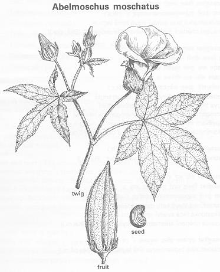

|
ECONOMICALLY
IMPORTANT PLANTS OF INDIA |
| Under-utilized Food and Fodder species and their wild relatives | Contributed by Ms.M.L Annapurna And Dr. Dhanapal, UAS, Bangalore |
Abelmoschus moschatus Medik.
----- Taxonomic Details

----- Correct Name
----- Classification
----- Synonyms
----- Common Names
Other Biological Details
----- Habit and Habitat
----- Diagnostic Features
----- Reproductive Biology
---------- Breeding System
---------- Phenology
---------- Pollinators
---------- Seed Biology
----------Seed Germination
------ Cultivation
----- Major Pests and Diseases
Economic Potential and Uses
----- Parts Used
----- Uses
----- Harvesting Practices
----- Produce and Products
----- Chemistry
----- Processing Techniques
----- Other uses
----- Economic Potential to the
Country
----- Export Potential
Miscellaneous Information
Literature
HABIT & HABITAT:
This species of Hibiscus is not
common. It requires constant warmth and bright light and it is a heavy bloomer
that is tolerant of some dryness.
Availability :
Status :
DIAGNOSTIC FEATURES
It is an attractive bushy plant 1-1/2' to 2-1/2'
tall. Annual or perennial herbs, 1-2 m tall, hirsute. Stipule filiform, 7-8 mm;
petiole 7-15 cm, sparsely hirsute; leaf blade 6-15 cm in diam., usually
palmately 5-7-parted, lobes lanceolate to triangular,
The leaves are 3 to 5 lobed, sparsely hirsute abaxially and adaxially, base
cordate, margin irregularly serrate, occasionally marplelike lobed. Flowers
solitary in axils of leaves; pedicel 2-3 cm, hirsute; bracteoles 8-10, filiform,
10-13 mm. Calyx spathe-shaped, 2-3 cm, 5-parted, usually caducous. Petals 5,
yellow, dark purple at adaxial base, corolla 7-12 cm in diam. Staminal column
ca. 2.5 cm, glabrous. Style branches 5,stigma disk-shaped. Capsule oblong,
5-6 cm, apex acute, yellow hirsute. Seeds reniform, glandularly reticulate, with
mask flavor.
REPRODUCTIVE BIOLOGY
Flowers are pink to red with 5 petals.
Breeding System :
Phenology :
Flowers in June - October and sets fruit simultaneously.Ripening of pods starts
in November and may continue till March End.
Pollinators: MAJOR PESTS & DISEASES
Seed Biology :
Seed Germination:
Cultivation:
Land is prepared by ploughing,harrowing and levelling.Well decomposed FYM is
applied and mixed well.Ridges and furrows are opened giving a spacing of 60 cm.
1/3rd dose of nitrogen and full dose of phosphorus and potassium is applied in
furrows and mixed well with the soil at the time of sowing.Seeds are soaked in
water for 24 hours and 2 to 3 seeds are sown per mill on one side of the ridge
at a depth of 1 cm and covered with soil.The field is irrigated soon after
sowing.Nitrogen is applied in 2 equal split doses 60 days and 120 days after
sowing.Fetilizers are applied in furrows about 10cm away from the plants.Extra
seedlings are thinned out leaving one healthy growing plant per hill,after
twenty days.
Pests:Spider mites and pod borer.
Diseases:Powdery mildew and wilt.
Economic
Potential and Uses
Parts used
Seeds
Uses
Oil is extracted from seeds.
Harvesting
Practices
The crop starts flowering after about 75 days of sowing.The flowers set fruits
in nearly 3 to 5 days and the pods take nearly a month to mature.Harvesting of
this crop is labour intensive.An average yield of 900 to 1000 kg seeds can be
obtained per hectare.
Produce and Products
Oil
The seed oil is of high economic value.
Export Potential